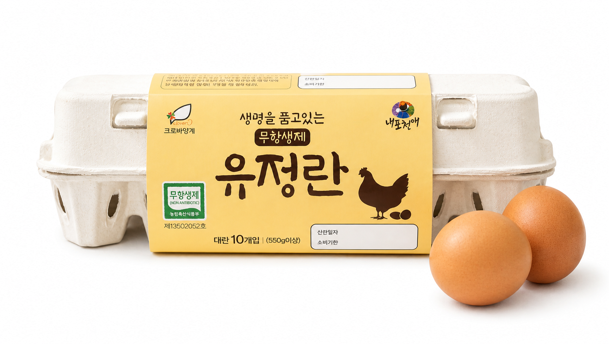

전국 로컬 브랜드
영진관광이 직접 발굴하고 소개합니다.
LOCAL BRAND JOURNEY
여행의 즐거움은
좋은 브랜드를 만나는 것에서 시작됩니다.
영진관광이 직접 발굴하고 소개합니다.
믿을 수 있는 브랜드만 엄선하여 추천합니다.
사람과 철학이 담긴 진짜 이야기를 전합니다.
공식 스토어로 안전하게 연결해 드립니다.
자연이 키운 건강한 먹거리
전국 농부들의 정성과 진심을 담은
신선한 농산물을 만나보세요.
총 0개의 브랜드
LOCAL BRAND MAP
브랜드의 정확한 매장이나 농장 주소가 아닌 시·군 지역 중심 위치입니다.
지역으로 브랜드 찾기
지역 마커를 누르면 해당 지역의 브랜드가 표시됩니다.

i4 ORIGINAL농산 · 계란
농장 환경과 생산 과정을 직접 확인할 수 있는 계란
BRAND STORY
i4는 단순히 계란을 판매하는 것을 넘어, 농장의 사육 환경과 생산 과정을 소비자가 직접 확인할 수 있도록 투명한 정보를 제공하는 계란 브랜드입니다.
제품과 연결된 정보를 통해 생산 과정을 확인할 수 있습니다.
소비자가 안심할 수 있도록 농장 환경 정보를 제공합니다.
생산부터 판매까지 신선도를 중요하게 관리합니다.
제품에 대한 정보를 숨기지 않고 투명하게 전달합니다.
FARM TRACEABILITY
i4 계란은 제품에 연결된 농장 정보를 통해 사육 환경과 최근 활동 상태를 확인할 수 있습니다.
농장 데이터는 제품 코드와 연결된 정보이며, 화면에 표시되는 위치는 정확한 농장 주소가 아닌 제품 추적용 정보입니다.
가격, 배송, 교환 및 환불 정책은 네이버 스마트스토어의 상품 페이지를 기준으로 합니다.